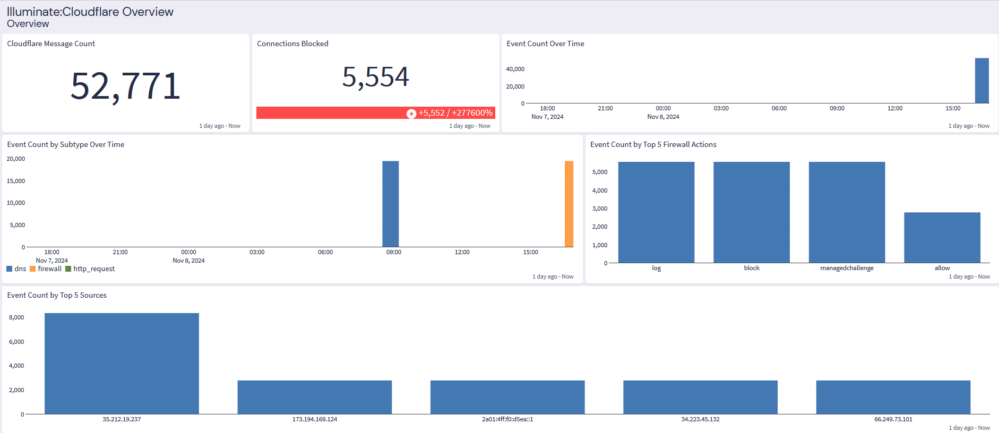
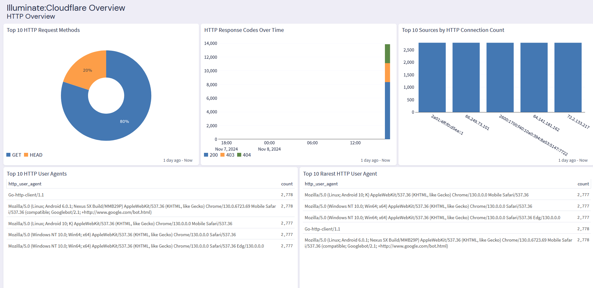
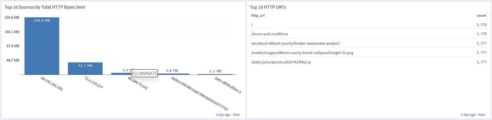

Cloudflare is a comprehensive cloud web-based security and performance platform that works by filtering out malicious traffic, preventing cyberattacks like DDoS, and optimizing content delivery to ensure faster loading times for users. This technology pack processes Cloudflare logs with normalization and enrichment for HTTP Request, Firewall Event, DNS, WAF, and account-scoped dataset log types (Access Requests, Audit Logs, Gateway DNS, Gateway HTTP).
Cloudflare 2024.10.2
Cloudflare Logpush configured to deliver logs to Graylog via a Raw HTTP input.
Graylog Enterprise version 6.1.0 or later.
The input routing lookup must be configured to map the Raw HTTP input ID to 'cloudflare' under Enterprise > Illuminate > Customization.
This technology pack includes 1 stream:
This technology pack includes 1 index set definition:
Parsing rules to extract Cloudflare logs into Graylog schema-compatible fields.
GIM categorization for HTTP Request, Firewall Event, DNS, WAF, Access Request, Audit, Gateway DNS, and Gateway HTTP logs (see table below).
Firewall and WAF event action mapping for all Cloudflare actions (block, allow, challenge, etc.).
Cloudflare Spotlight dashboard.
GIM categorization is provided for the following log types:
| Log Type | gim_event_type_code | gim_event_category | gim_event_subcategory | gim_event_type |
|---|---|---|---|---|
| DNS logs | 140000 | name resolution | name resolution.dns request | dns query |
| Firewall events (all) | 120000 | network | network.network connection | network connection |
| Firewall events (blocked) | 300001 | detection | detection.network_detection | network_detection |
| HTTP Request logs | 180100 | http | http.request | http request |
| WAF logs | 180100 | http | http.request | http request |
| WAF logs (blocked) | 300001 | detection | detection.network_detection | network_detection |
| Access Requests | 100000|100500 | authentication | authentication.logon|authentication.credential validation | logon|credential validation |
| Audit Logs | 229999 | audit | audit.default | audit event |
| Gateway DNS | 140000 | name resolution | name resolution.dns request | dns query |
| Gateway HTTP | 180200 | http | http.communication | http communication |
Cloudflare logs are delivered via Logpush to a Graylog Raw HTTP input.
Create a dedicated Raw HTTP input for Cloudflare logs.
Access the input's received messages to obtain the input ID (gl2_source_input value).
Navigate to Enterprise > Illuminate > Customization tab.
Edit lookup_adapter_input_routing and map the input ID to cloudflare.
Repeat for multiple inputs as needed.
The Cloudflare Spotlight offers two dashboard tabs: Overview and HTTP Overview.


